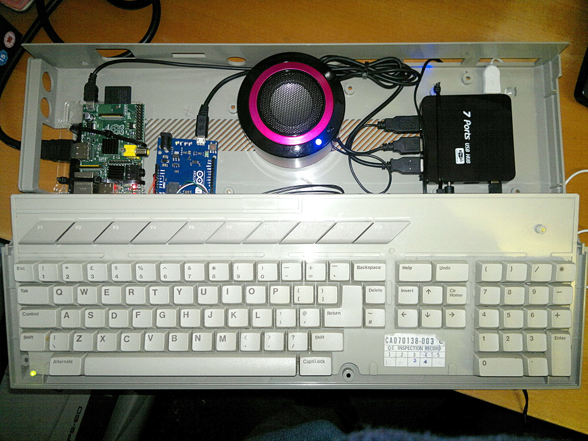

Atari Pi Project: Components | Arduino Wiring | Arduino Coding | Pi Mounting | Pi Software | Final Assembly
Putting it all Together
I used sticky-backed velcro to mount the Arduino, speaker and USB hub in the case with a couple of strategic tie-wraps used to make everything a bit more solid.
The Pi is connected twice to the USB hub, one cable for power and the other for the USB data connection. I understand that some versions of the Pi can be powered via the USB ports but when I tried that with mine it didn't work reliably.
The mouse, speaker and Arduino are all connected to the USB hub so they can draw power from there and not overload the Pi.
As ever with these projects it will never be fully completed. I am still looking for a neat way of blanking off the many unused openings in the ST case. I would also like to have the power and mouse sockets broken out so they are on the outside of the case.

Return to home page.